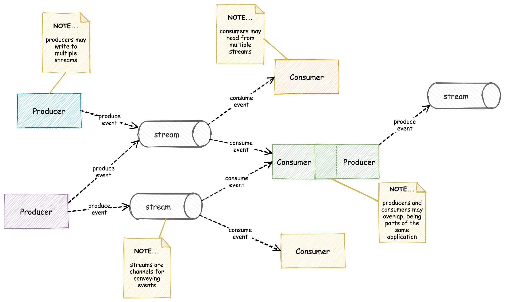

Software architecture is trade-offs
Coupling and cohesion
In software design we want to achieve loose coupling and high cohesion
...sometimes
Loose coupling and high cohesion
Means that modules should
- be independent of each other
- have a single purpose
- have a well defined interface
Tight vs loose coupling
Communication in distributed systems
Synchronous vs asynchronous
Communication in distributed systems

What is an Event?
In business terms: Actions of interest that occur at distinct points in time
In software: Simply a message sent between two system components or services.
It has a spesific type and can contain information that is passed to the other component.
Batch vs Stream processing

Event-driven architecture
Reference model
Message brokers

IoT use case
Azure Event Hub
Apache Kafka
Command Query Responsibility Segregation
Event sourcing